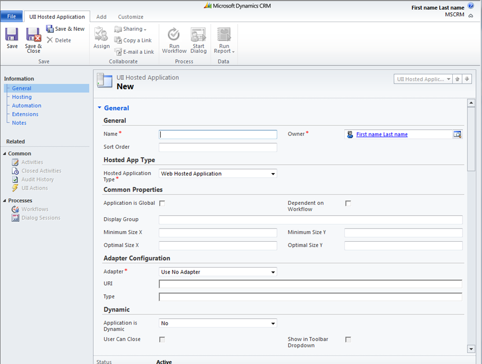
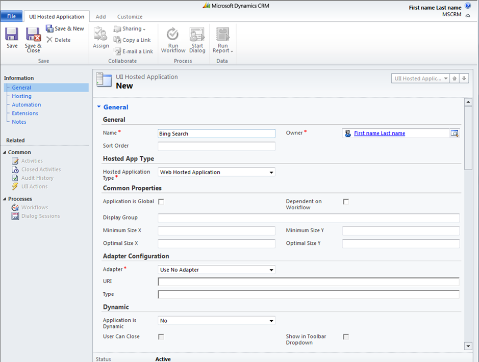
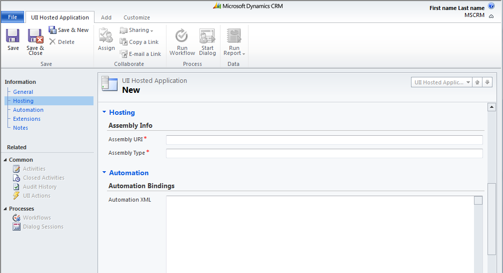
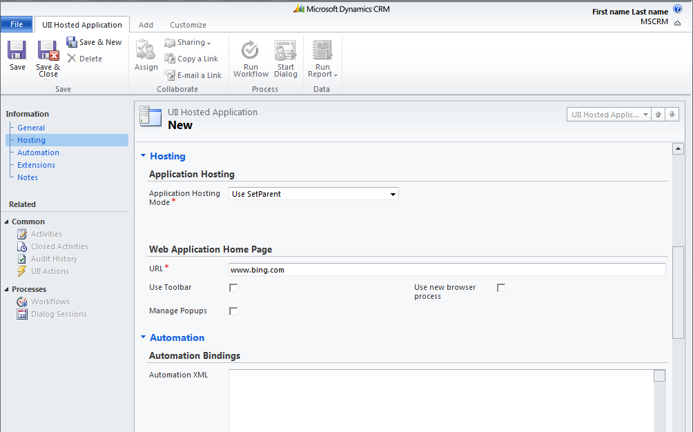
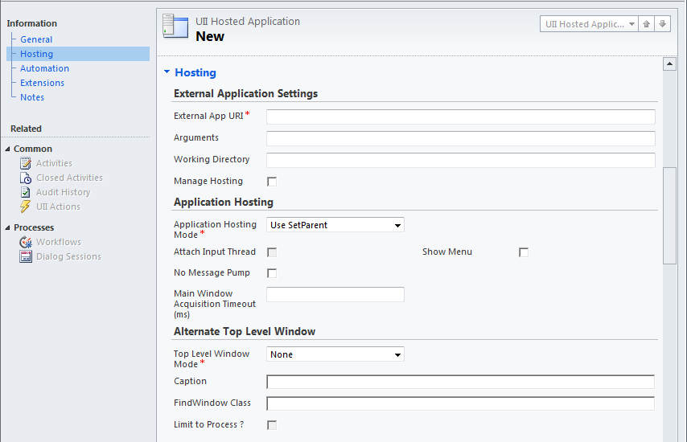
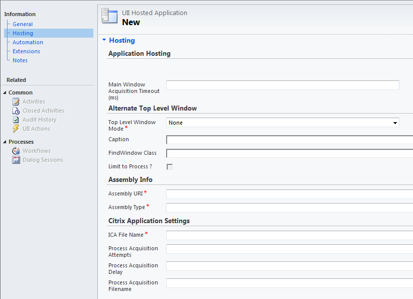
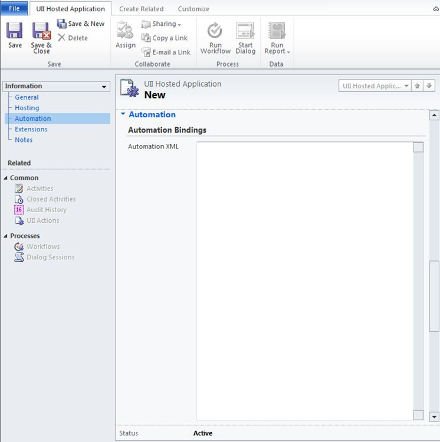
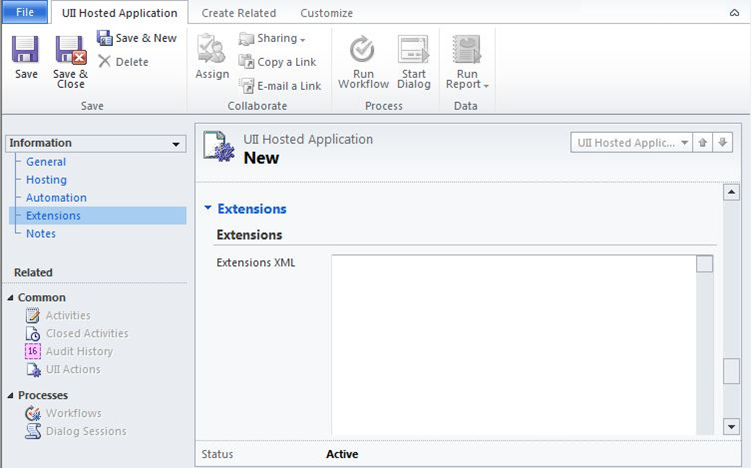
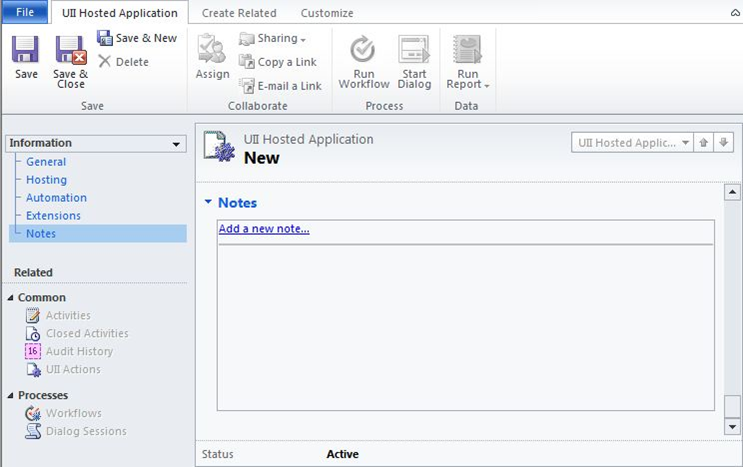

UII Administrator can use the UII Hosted Application management features to create a new hosted application.
To create a hosted application
- Using CRM administrator credentials, log on to Microsoft Dynamics CRM.
- In the left navigation pane, click Settings > UII Settings > UII Hosted Application. The UII Hosted Applications page appears, showing the details of the existing hosted application.
- In the UII Hosted Application action pane, click New. The New Hosted Application page appears, as shown in the following illustration.

- On the General page, in the top section, type the hosted application name in the Name text box, select the owner in the Owner box, and then type the sort order in the Sort Order box. Each hosted application should have a unique name. Sort order specifies the order in which the hosted applications are retrieved and displayed in the Integrated Agent Desktop.
- In the Hosted App Type section, select one of the following application types from the Hosted Application Type drop-down list:
- Hosted Control – Select this option for a user control, such as Session Explorer, Workflow Explorer, Workflow Manager, or Customer Search Panel.
- Web Hosted Application – Select this option for a web application.
- External Hosted Application – Select this option for a Windows-based application.
- Remote Hosted Application – Select this option for a Citrix application.
In the following illustration, Web Hosted Application is selected.

- In the Common Properties section, select either Application is Global or Dependent on Workflow. Complete the other fields in the section.
- In the Adapter Configuration section, select one of the following adapter configuration options from the Adapter drop-down list:
- Use No Adapter – Select this option if the hosted application does not require any automation.
- Use Automation Adapter (HAT) – Select this option if you want to use the default configuration used for the Hosted Application Toolkit (HAT) Software Factory.
- Use Adapter – Select this option to use a custom adapter.
- In the Dynamic section, click Yes if the application is dynamic, or click No if the application is not dynamic. Select the User Can Close and Show in Toolbar Dropdown check boxes, if appropriate.
- In the left navigation pane, click Hosting or scroll down to the Hosting section. If you click Hosting, a Hosting page based on your selection for the Hosted Application Type drop-down list on the General page appears.
- If you selected Hosted Control, the following page appears.

Type the Assembly URI and Assembly type in their respective boxes.
- If you selected Web Hosted application, the following page appears.

In the Web Application Home Page section, type the URL in the URL box. Select the Use Toolbar or Use new browser process check box, as appropriate.
- If you selected External Hosted application, the following page appears.

- If you selected Remote Hosted application, the following page appears.

The following table shows some of the common settings for a hosted application.
Property
Description
General
Hosted App Type
The application type: Hosted Control, Web, External, or Remote Hosted Application.
Application is Global
If set to True, the application is run globally and is independent from the session context. The default is False.
Dependent On Workflow
If set to True, the application is loaded only through a workflow step. The default is False.
Display Group
The display group in the Integrated Agent Desktop where the application will be hosted. The property is ignored if the application is hosted externally.
Minimum Size X
Minimum size of the application window in the Integrated Agent Desktop along the X axis. The default is 0. When hosting applications with windows that cannot be resized, make sure that you use the minimum size property of the application.
Minimum Size Y
Minimum size of the application window in the Integrated Agent Desktop along the Y axis. The default is 0. When hosting applications with windows that cannot be resized, make sure you use the minimum size property of the application.
Optimal Size X
The display size of the application in the Integrated Agent Desktop along the X axis. The default is 0.
Optimal Size Y
The display size of the application in the Integrated Agent Desktop along the Y axis. The default is 0.
Adapter Configuration
Describes the type of adapter used (HAT uses AutomationAdapter) along with the Uniform Resource Identifier (URI) and data-driven adapter type details.
Dynamic
If set to True, the application can be dynamically loaded. The default is False. When Dynamic is set to True, you can set only the User Can Close and Show In Toolbar Dropdown properties to True. You cannot set Dynamic and Dependent On Workflow properties to True at the same time.
Hosting
Assembly Info
Assembly URI and type.
Application Hosting
Allows selecting the mode of hosting the application: Host Outside, Use Set Parent, or Use Dynamic Positioning.
URL
The URL of the web application.
Use Toolbar
If set to True, this displays the Internet Explorer toolbar.
Use New Browser Process
If set to True, the application is initiated in a new Internet Explorer process.
Manage Pop ups
If set to True, it allows pop-up windows to be managed on the Integrated Agent Desktop.
External App URI
The path of the executable.
Arguments
Arguments used during application initiation.
Working Directory
The working directory for the executable.
Show Menu
If set to True, this displays the system menu for the application.
No Message Pump
If set to True, the application does not have a Windows Messaging queue.
Note: "No Message Pump" setting for External Applications hosted using "SetParent" is ignored.
Main Window Acquisition Time out
Timeout period for the top-level window handle to be found.
Top Level Window Mode
Mode specified will be used to find the top-level window.
Caption
The caption specified will be used to find the top-level window.
Limit To Process
Limits to the process ID for the main process when searching for a window handle.
Alternate Top Level Window
The caption specified will be used to find the top-level window.
Citrix Application Settings
Citrix application details, such as the Citrix Independent Computing Architecture (ICA) file name and process acquisition details.
Retain Frame and Caption
Allows the frame and caption of the hosted application to be retained.
Retain on Taskbar
Allows the hosted application to be retained on the taskbar.
Retain System Menu
Hosted application’s system menu options (such as Close, Minimize, and so on) are retained when ALT+SPACE is pressed.
Restore if Minimized
Allows a hosted application to be restored if it is minimized.
Remove Sizing Controls
Allows sizing controls (such as Maximize, Minimize, and Restore buttons) to be removed from the hosted application.
Automation
Automation Binding
Displays automation XML bindings.
Extensions
Extensions
Displays the extension XML.
Notes
Notes
Displays the notes mentioned.
- If you selected Hosted Control, the following page appears.
- In the Application Hosting section, select one of the following from the Application Hosting Mode drop-down list:
- Host Outside – Select this option if you want the application to be started outside of the Integrated Agent Desktop.
- Use SetParent – Select this option to set the application's root window as the child window of the Integrated Agent Desktop.
- Use Dynamic Positioning – Select this option to monitor the size and position of the Integrated Agent Desktop and to dynamically adjust the size and position of the application.
- In the left navigation pane, click Automation or scroll down to the Automation section. If you click Automation, the Automation page appears, as shown in the following illustration.

- In the Automation Bindings section, type or paste the required automation XML in the Automation XML box.
- In the left navigation pane, click Extensions or scroll down to the Extensions section. If you click Extensions, the following page appears.

- In the Extensions XML box, type or paste any custom extensions.
- In the left navigation pane, click Notes.

- On the Notes page, type the notes in the Notes field, and then click Save or Save and Close.
 Note:
Note: